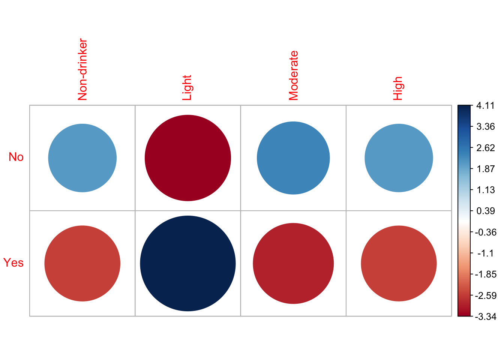
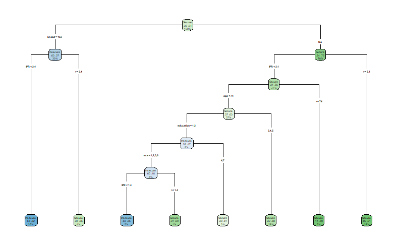

library(haven)Final Project, Group 1
Stats 515-002
Introduction
NHANES, the National Health and Nutrition Examination Survey, is a survey conducted by the CDC’s National Center for Health Statistics, NCHS, annually. This survey collects information from about 5000 adults and children across the country every year, since 1999. As there are records prior, however continuous data collection has not stopped since 1999.Data published from NHANES is publicly available, minus any potentially identifiable information pertaining the participants. In our research we wanted to focus on the most recent year that data is available for, and we have decided to use the 2021-2023 data set. This is due to NCHS being unable to provide the complete 2025 data set. Due to the extensive amounts of data, we decided to spread our research questions across different topics. In this project we delve into the associations with BMI, predicting if adult obesity, association between alcohol consumption and high blood pressure, and predicting the food security of a household.
Method
Our initial step is to import the “Haven” library, and the other libraries needed for our testing, in order to import and read the .xpt files obtained from the NHANES website.
How are age, gender, race/ethnicity, physical activity, and smoking associated with BMI?
To answer this question, we will use linear regression analysis and begin with a short overview of the regression process. The goal of using linear regression is to assess weather the relationships that we observe in a sample are likely to exist in the larger population. The regression analysis computes a t-statistic for each independent coefficient and turns that into a p-value. The p-value which is associated with each independent variable test the null hypothesis that the corresponding coefficients is equal to zero, indicating that no linear relationship with the dependent variable exists. Failing to reject the null suggests that insufficient evidence of an association between the independent variable and the response exist, however this is not support of the null hypothesis.
We start by downloading NHANES data for the 2021 - 2023 cohort from the CDC website cdc.gov. We used a subset of the available data set which includeed: Alcohol, Body measurements, Blood Pressure & Cholesterol, Demographics data, Income information, Smoke usage, and Physical activity (both youth and adults). These files are available to the public in .xpt format, and after downloading, they were loaded into a data frame in R using the read_xpt function. Since each data file contains a unique Respondent Sequnece Number we are able to join all of the individual files then combined into one full data frame. This total data frame is then filtered to include only the necessary variables and drop any missing values. We then fit a linear regression model using BMI as a predictor and age, gender, physical activity, and smoking as independent variables. We are left with 1847 observations to work with for a linear regression model; viewing a plot of the results we can see that a strong relation ship is not present.
Checking for significance in the model
After fitting the linear regression model, looking at the coefficients output from the summary(model) command. A coefficient value of Pr(>|t|) > 0.05 should be treated as not statistically significant at the standard 95% confidence level given the other predictors in the model.
We can see from the coefficient table that some of the variables are not significant and do not contribute to the linear model.
Analysis from the final_fit model: We can see that at least one predictor is associated with BMI meaning that overall the model is statistically significant. However; the R^2 value of 0.0179 and adjusted R^2 fo 0.0158 means that these variables only explain less than 1.8% of the total BMI variation.
Age is significant and negative (beta = -.0365, p = 0.00019), this means that holding all other variables fixed, each 1 year increase in age is associated with about 0.036 lower BMI on average.
Days of physical activity is not significant, p = 0.116, we see no strong evidence that it contributes after adjustment in the model.
Smoking2 is borderline with p = 0.0577, this shows weak evidence for higher BMI than the referenced smoking group.
Smoking3 is significant and positive, beta = 1.714 and p < 0.001, this category has about a 1.71 higher BMI than the referenced smoking category adjusting for age and physical activity.
Overall Summary of Findings In a multiple linear regression of BMI on age, days of physical activity, and smoking, age and smoking were significant predictors while days of physical activity was not. Despite statistical significance of the overall model, explanatory power was low (adjusted R^2 = 0.016), suggesting important BMI predictors are not included in this specification.
Is alcohol use (ALQ_L) associated with high blood pressure (BPQ_L — “ever told you had high blood pressure”)?
As noted earlier, NHANES survey collects a large amount of data, with topics ranging from physical activity to most common types of diseases. For this question, we decided to see if we could predict an association between alcohol use and high blood pressure diagnostic. To do this, we pulled the following columns from the ALQ_L.xpt file, ALQ111, “ever had a drink of alcohol”, ALQ130, the frequency at which the individual drank. The levels factored for drinking frequency varied from “Non-drinker”, “Light”, “Moderate”, and “High”. We then pulled the following column from the BPQ_L.xpt file, BPQ080, “have you ever been told you had high blood pressure”. Finally, we joined the two data sets by inner joining by the individuals’ sequence number and filtered it to anyone 18 years or older, as we are looking into alcohol consumption.
After compiling the data needed for this testing, we decided that using the chi square test of independence would fit best since we are working with two categorical variables. Through this testing, we will be able to determine whether the two variables, alcohol consumption and high blood pressure, are associated with each other. Now that the data has been gathered, we enter the two columns into a contingency table and run the chi square test.
Contingency Table and Chi Sqaure Results
Non-drinker Light Moderate High
No 913 1959 566 377
Yes 501 1547 284 185
Pearson's Chi-squared test
data: contingency_table
X-squared = 64.234, df = 3, p-value = 7.315e-14When comparing the chi square “expected” results, it is important to remember that the values shown is what the expected observations would be if the two variables were independent of each other. When looking at the values of the chi square “residuals”, or Pearson Residuals, if the absolute value of a cell is greater than three, it would indicate whether or not that cell contributed to a significant lack of fit. This would mean for a high positive residual the cell contains a much higher count than expected, and the opposite for high negative residuals. Knowing this, we see that the absolute value of both “Yes” and “No” for the “Light” drinking frequency could both contribute to a significant lack of fit.
Non-drinker Light Moderate High
No 851.93 2112.35 512.12 338.6
Yes 562.07 1393.65 337.88 223.4However, a significant lack of fit driven by on or more cells in a test of independence suggests that an association does in fact exist. This is not to say alcohol directly causes high blood pressure, but we can conclude, after rejecting the null hypothesis, that alcohol consumption and high blood pressure are associated. If we wanted to test how strong of a variable alcohol consumption was, we would need to do further research and testing in the future.
Additionally, we were able to plot the residuals from our expected values against the observed ones, and we noted that the absolute value of all the standardized residuals were greater than 2. This also leads us to the same conclusion where both variables can be noted as statistically significant.

Non-drinker Light Moderate High
No 2.09 -3.34 2.38 2.09
Yes -2.58 4.11 -2.93 -2.57We reject the null hypothesis since the p-value, 7.315e-14 is much smaller than the significance levels. This provides strong evidence of a significant association between the person’s blood pressure and the amount of drinks consumed. In other words, the chi-square test results indicate that the likelihood of an adult having high blood pressure is significantly associated with the amount of drinks consumed.
Can we predict whether a household will be Food Secure or Inseucre based on based on SNAP participation, WIC receipt, emergency food use, and demographic characteristics?
For this question we acquired FSQ_L.xpt and Demo_L.xpt files from the NHANES data directory, and used the following columns; from FSQ_L.xpt we selected FSDAD, “adult food security category, FSQ012, whether or not the person’s household received SNAP or Food Stamp benefits in the last 12 months, FSD151, whether or not the household received emergency food, including food from a church, food pantry, food bank, or soup kitchen, FSD162, if the household received Women, Infants, and Children program benefits in the last 12 months, and FSD165N, how many people in a household received SNAP or food stamps benefits.
Within the NHANES survey, there are options like “refused”, “don’t know”, or “missing”, so we decided to replace any values like those with N/A and omitted those rows from the compiled data set. From the demographic data set, Demo_L.xpt, we pulled the columns containing the age, race, sex, education level, income to poverty ration, and household size.
After compiling the data needed for this testing, we decided that forming a classification tree would fit best since we wanted to find an outcome based on the categorization of the individuals, and not a continuous result. Now that the data has been compiled by individuals’ sequence number, we factor the levels to be yes or no for the majority of our variables, and label insecure or secure based on the FSDAD column.
We used a 70%/30% training/testing split since we had a large data set, and would afford us a more rigorous training set to work off of. After background research on the rpart package, we examined the complexity parameter table, and found the tree that would use the lowest cross validated error (xerror) and the amount of splits correlated to it. Using “which.min()”, we were able to prune our tree and prevent over fitting our model.

From our model and examining the “variable.importance”, we are able to tell that Emergency food is the first split due its high impact on predicting an individuals’ food security.
EFood IPR education
116.6898188 12.9367490 0.2193418 Checking the confusion matrix, we can see that we had a 70.88% accuracy of people being classified correctly. However our true positive and negative rates were 46.93% and 84.65%, meaning that only 46.93% of all food insecure people were correctly classified as food insecure and 84.65% of food secure people were classified correctly. Since we have a high specificity and low sensitivity, we can assume that our model is good at dictating when someone is food secure, however it has issues like false negatives when classifying someone as food insecure.
Confusion Matrix and Statistics
Reference
Prediction Insecure Secure
Insecure 130 74
Secure 147 408
Accuracy : 0.7088
95% CI : (0.6751, 0.7409)
No Information Rate : 0.635
P-Value [Acc > NIR] : 1.063e-05
Kappa : 0.3345
Mcnemar's Test P-Value : 1.277e-06
Sensitivity : 0.4693
Specificity : 0.8465
Pos Pred Value : 0.6373
Neg Pred Value : 0.7351
Prevalence : 0.3650
Detection Rate : 0.1713
Detection Prevalence : 0.2688
Balanced Accuracy : 0.6579
'Positive' Class : Insecure
The False Negative rate is 53.07 %.When checking the predicted values, we can see that 63.73% of the people the model predicted as food insecure were correct, and 73.51% of the people predicted as food secure were correct. Additionally we are able to check our false negative rate, and we resulted with a 53.07% rate. This indicates that our model missed out on about 147 households, who were classified as secure. We can conclude that our model is able to predict the food security of individuals, however the results should be investigated more due to the large amount of households that were excluded in the final results.
Conclusion
In summary, according to our analysis and testing of the data, (insert portion related to your questions and results), as well as the significant association between alcohol consumption and high blood pressure, and the reliability of our classification tree.